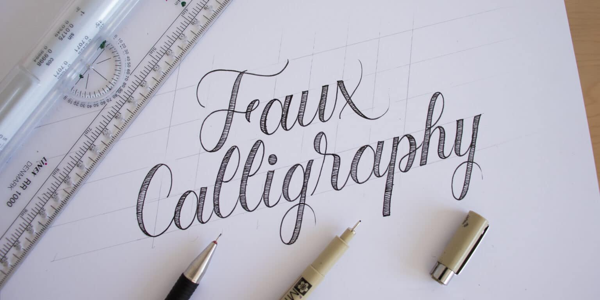
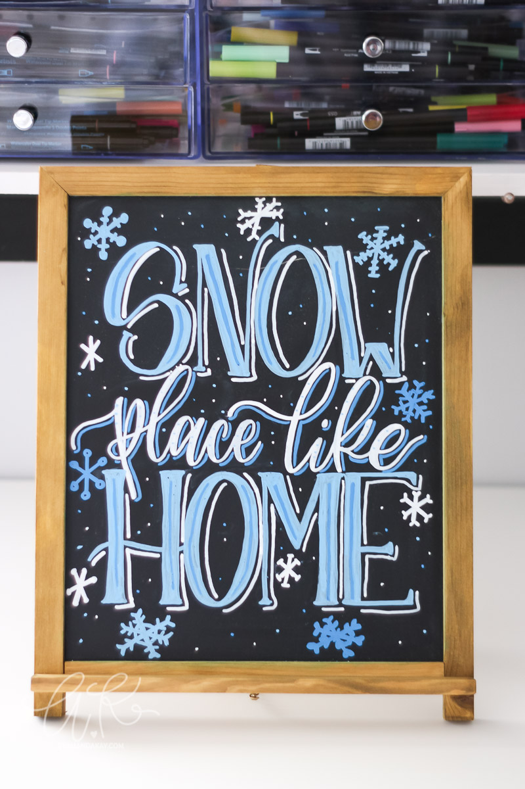
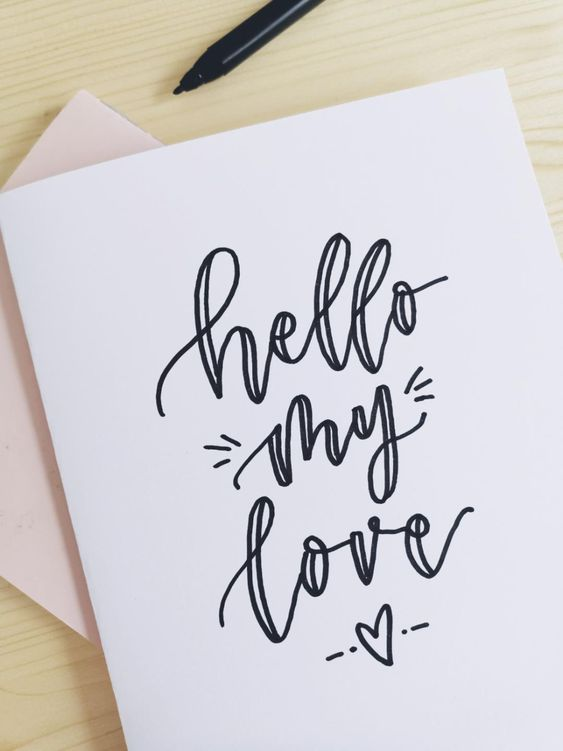

Introduction
Faux calligraphy is just like it's name, is a type of 'fake' calligraphy.
It may look alike modern calligraphy, but the way we write both is very different.
The theory behind faux calligraphy can be applied to any other fonts, even your normal hand writings!
If you want to find out other font styles that uses this theory, try searching Faux Lettering!
|  |
We 'create' and 'draw' out the strokes for faux calligraphy, where we can decide the pressure, strokes and design all by ourselves! Cool huh?
Basically, we usually pressure our pens when writing downstrokes for regular calligraphy but instead of writing it, we 'draw' the stokes in faux calligraphy. Just simply draw another stroke beside the downstroke and DONE !
As it is rather easy to learn and apply, many beginners start their journey here! So if you feel like learning calligraphy but don't want to buy extra calligraphy tools, try this!
We'll include tutorial videos later so let's get to know the tools you need first.
Tools
As faux calligraphy is not technically a type of calligraphy, there are NO fixed tools or medium for it. You can write using your daily stationeries. Chalks, pencils, pens, markers, brush pens, you name it.
For better practicing purposes, feel free to download the worksheet with gridlines.
 
Tutorials
The basics of faux calligraphy is the same as regular calligraphy, except that there is no pressure change for downstrokes.
In other words, faux calligraphy is more like turning cursive writings into calligraphy style.
1. This video shows a very basic explanation on how faux calligraphy is written compared to regular calligraphies.
2. This video below demonstrates on how to write faux calligraphy alphabets from tracing(pencil) to outlining and filling in (markers).
Faux calligraphy can be used in various designs, common ones are chalkboard menus, wedding mirrors, bullet journals, and such.
Whenever you want to add some design or artistic touch onto your creations, faux calligraphy is definately your best choice.
Keep experimenting and have fun!